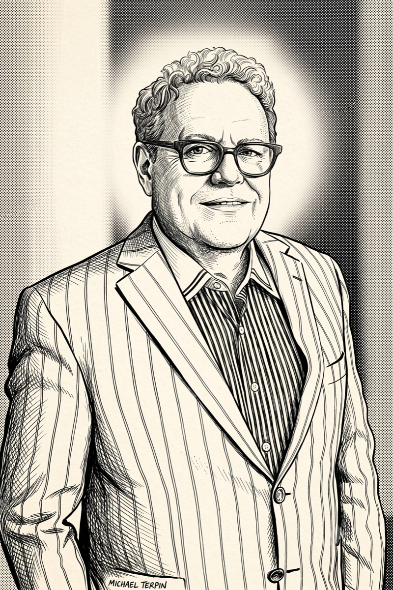
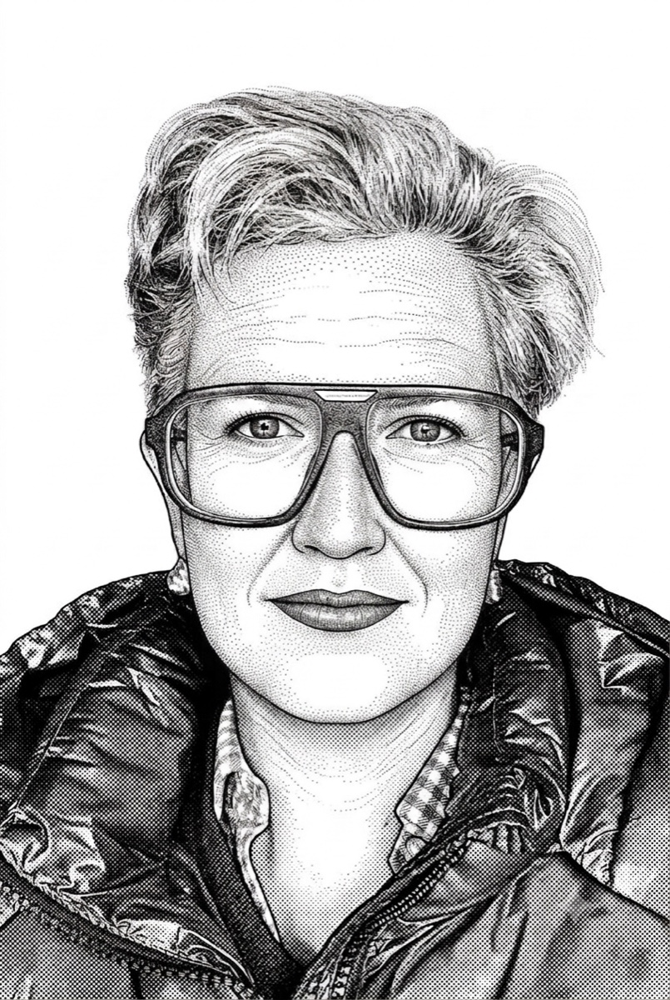

The people behind the track record.
A senior team that has operated through every major crypto cycle since 2013, from the first token sale in history to today’s institutional wave.

MTMichael Terpin
Michael Terpin is the founder and CEO of Transform Ventures, whose divisions include Transform Group PR, a global public relations firm that has served more than 300 clients in the blockchain field and helped launch more than 150 token sales, including Aeternity, Augur, Bancor, Dent, Ethereum, Factom, Golem, Gnosis, Lisk, MaidSafe, Neo, Qtum, SALT Lending, Tether, VideoCoin, and WAX Token; Tokenize!, an event series for cryptocurrency investors; and Transform Strategies, the company's advisory division. Transform Ventures, LLC, is headquartered in San Juan, Puerto Rico, with offices in Las Vegas, Los Angeles, Miami, Paris, and Dublin. Terpin also co-founded BitAngels, the world's first angel network for digital currency startups, in May 2013. Previously, Terpin founded Globe Newswire (originally Internet Wire), one of the world's largest company newswires, which was acquired in 2006, later sold to NASDAQ for $200 million, then to Apollo Global Management for $335 million, and to Equiniti for $535 million in 2025. Equiniti was sold in May 2026 to crypto exchange Bullish (NYSE: BLSH). He also co-founded Direct IPO, one of the earliest equity crowdfunding companies. He founded his first PR firm, The Terpin Group, which represented many of the early Internet leaders, including America Online, Earthlink, Match.com, and the Motley Fool. The Terpin Group was sold in 2000 to Financial Dynamics, now part of FTI Consulting (NYSE: FCN). Terpin holds an MFA from SUNY at Buffalo and a dual BA in journalism and English from Syracuse University, where he serves on the board of advisors at the Newhouse School of Public Communications. He is also the CEO and Chief Investment Officer of Supercycle Genesis Partners, LP, a Bitcoin-only hedge fund.

XWXenia von Wedel
Xenia von Wedel is the President of Transform Group. Xenia previously held senior executive roles with Terpin Communications and SocialRadius and has led global PR campaigns for technology companies for more than 20 years. In her role at Transform, Xenia has overseen PR campaigns for many of the agency's 300+ blockchain and fintech clients, including Augur, Bancor, Gyft, Lisk, Payment Data Systems, Qtum, Rivetz, SafeCash, SALT Lending, ShapeShift, Syscoin, Swarm, and WAX Token. She has secured media placements in top-tier outlets, including The Associated Press, Bloomberg, Barron's, CNBC, CoinDesk, Dow Jones, The Economist, Financial Times, Forbes, Fortune, Fox News, MSNBC, The New York Times, NPR, TechCrunch, USA TODAY, and The Wall Street Journal. Before blockchain's rise, Xenia focused on enterprise technology, cloud computing, and open-source technology. Xenia is fluent in German and French, and conversational in Spanish. She is based in the San Francisco Bay Area.
Lynessa Martin
Lynessa Martin is Senior Vice President at Transform Group, where she is responsible for media outreach, strategic development, and overall campaign management. Trained in social media marketing and public relations, Lynessa employs a comprehensive, 360-degree approach, positioning clients in the most engaging and relevant spaces to reach targets across verticals. She has been instrumental in the success of many of the agency's blockchain, adtech, and gaming clients, including Atari Token, GameCredits, IMVU, Playkey, Upland, WAX, and more. Before joining the agency, Lynessa studied social media and assisted in teaching public relations at Syracuse University's Newhouse School of Public Communications, where she earned her master's degree in media studies.
Joyce Chow
Joyce Chow is Director of Events at Transform Group, where she leads conference programming, speaker placements, and sponsorship strategy across the world's leading blockchain, digital asset, and technology events. She works across the firm's San Juan, Miami, Las Vegas, and Los Angeles offices.
Ready to lead your category?
We build and defend industry leadership positions through superior strategy, relationships, market intelligence, and consistent execution.
Partner With Us →